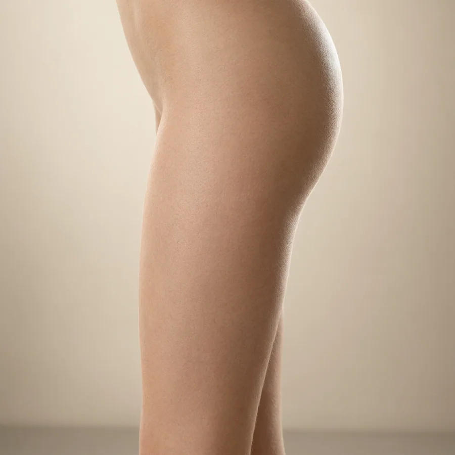
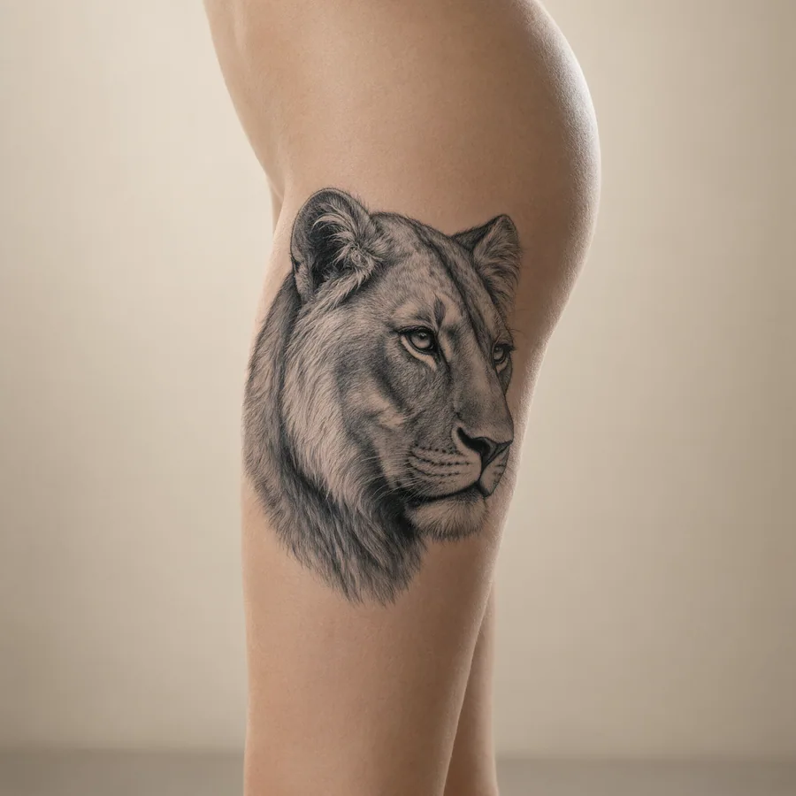
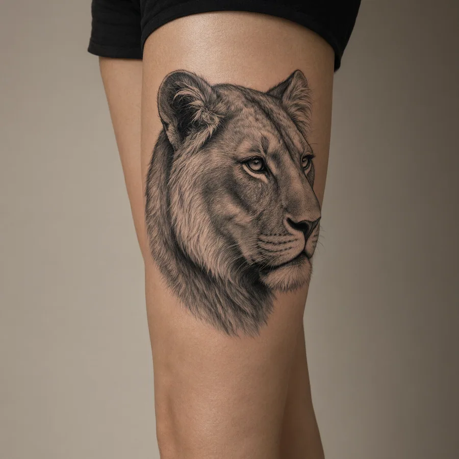
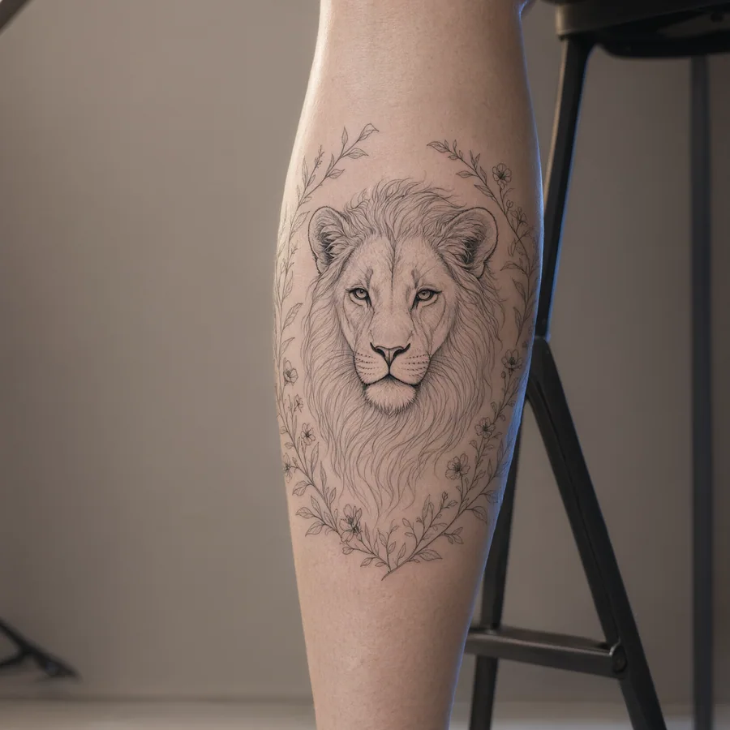
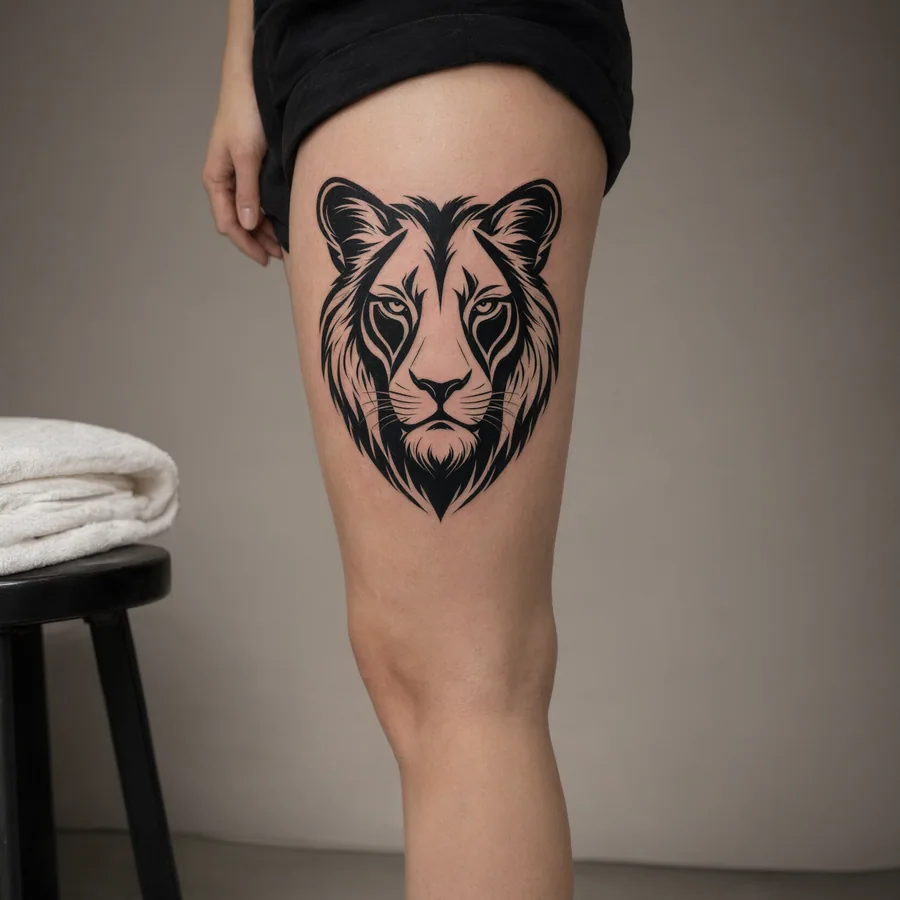
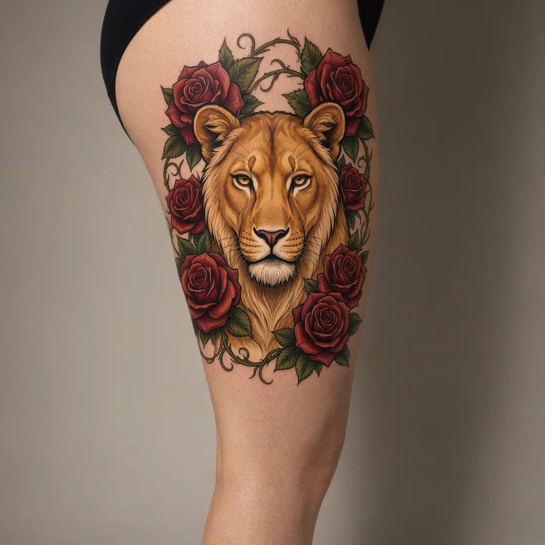
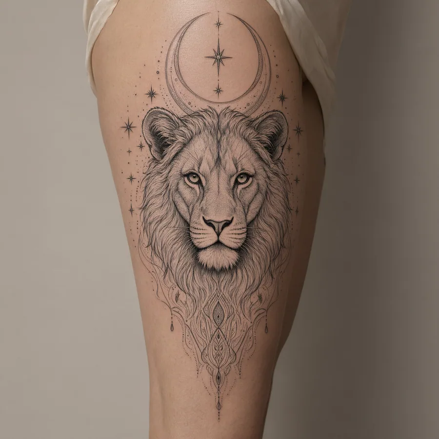
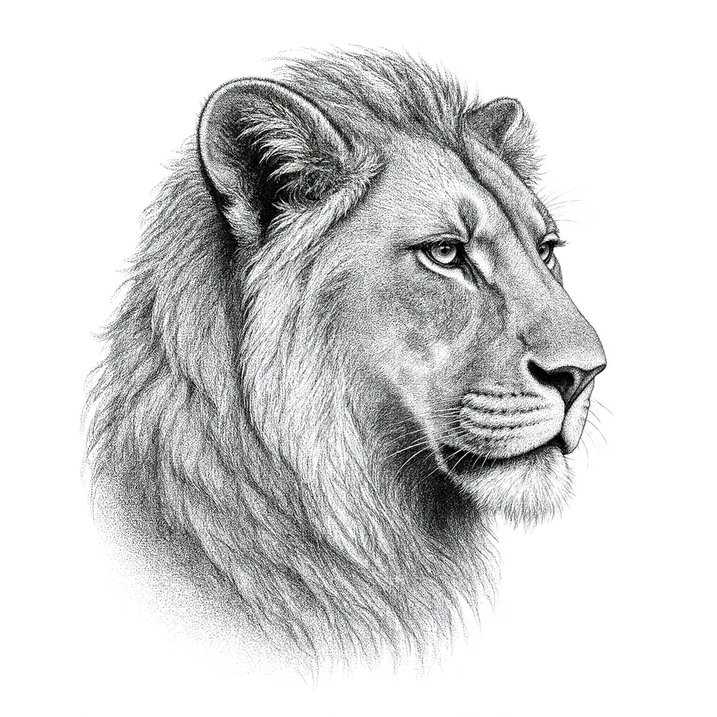
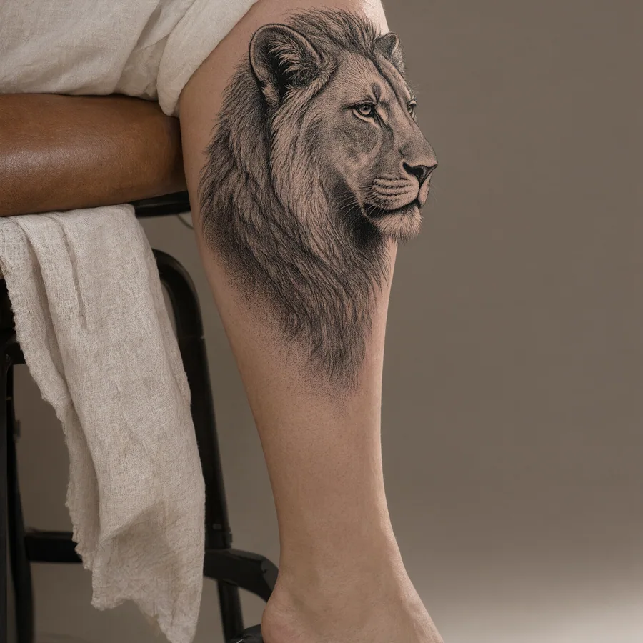
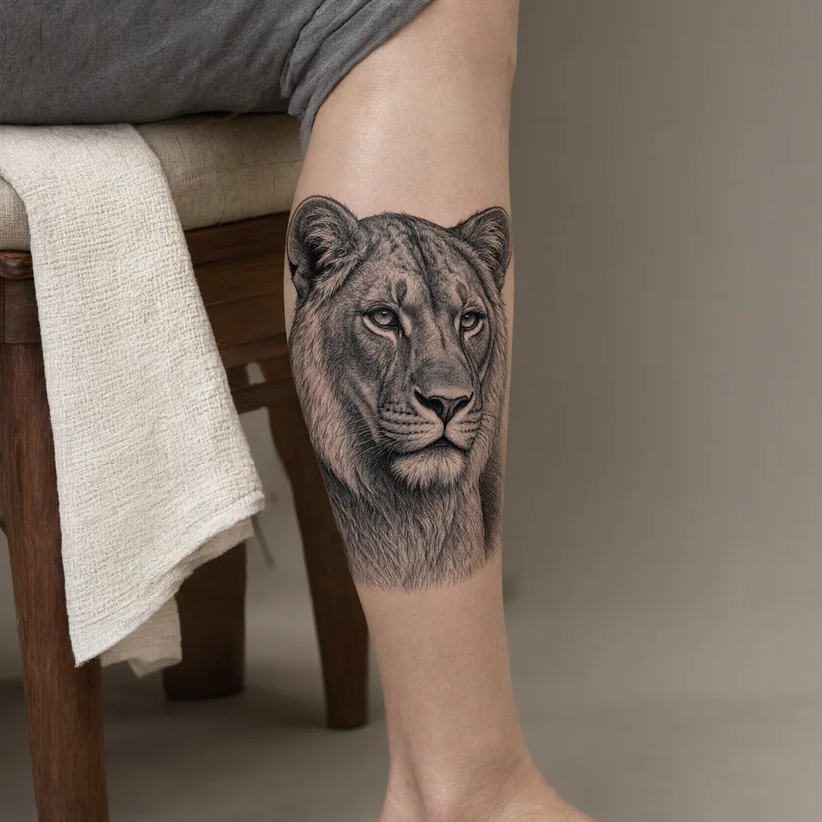

Dieciséis leonas, dieciséis maneras de mandar
La misma fuerza contada de dieciséis formas — del retrato realista al trazo único. Cada pieza está pensada para leerse bien sobre la pierna hoy, y en diez años.
Mostrando 0 diseños ·

Cada pieza de esta galería es original y funciona como referencia: tu tatuadora hará su versión final para tu piel y tu medida.
Pruébate tu leona antes de la aguja
El espejo ya está aquí, y la aguja puede esperar. Sube una foto de tu muslo o pantorrilla, acomoda la leona a tu gusto y pídele a la IA el acabado real: tinta asentada en tu piel, con su luz y su curvatura. Crea la cuenta con tu email y las primeras pruebas van por nuestra cuenta.


Sube una foto de tu pierna
El muslo o la pantorrilla, de frente o de perfil, con luz natural.
Elige tu leona
De la galería de arriba o una generada desde tu propia idea.
Míralo a escala y luz reales
Posición, tamaño y encaje antes de que la aguja decida.
Qué significa un tatuaje de leona en la pierna

En la sabana, quien caza no es el macho. La leona trabaja en equipo, madruga y decide el rumbo de la manada — y el rey, literalmente, come lo que ella trae. Tatuarse una leona es tatuarse a la que hace el trabajo: instinto, estrategia y protección sin necesidad de trono ni de rugido. Si quien te llama es la melena completa del macho, ese camino tiene su propia guía: Tatuaje de león en la pierna para mujer.
En el español latinoamericano, "es una leona" no es una frase de adorno: se lo dicen a la madre que defiende a sus hijos, a la que saca adelante su casa, a la que no se deja. Cuando ese apodo te lo ganaste de verdad, llevarlo tatuado es subrayarlo. Y si lo que quieres contar es la manada entera —pareja, crías, familia— las composiciones de grupo están en Tatuajes de leones en la pierna.
Hay algo que ninguna guía puede darte: el motivo. Una leona puede ser tu madre, o tu propia manada, o simplemente la versión tuya que sobrevivió a un año difícil. El dibujo lo traza la tatuadora; el sentido lo pones tú — y por eso no existen dos leonas iguales.
La versión que más se tatúa en la región lleva cachorros. El motivo que más repiten las que lo eligen es un tributo a la maternidad — a esa fuerza que sostiene una casa cuando nadie mira. La leona con crías lo dice sin palabras: protección, linaje, y la certeza de que lo que se cuida te sobrevive.
Estilos de tatuaje de leona en la pierna que envejecen bien
Una leona lleva el detalle en la mirada y en la mandíbula: la zona donde el estilo decide su futuro. Estas son las familias que mejor cruzan los años sobre piel de pierna:
Realismo
Pelo, mirada y volumen en gris. La leona realista exige tamaño: dale 15 cm para arriba o los rasgos finos desaparecen con la piel. En muslo exterior se desempeña mejor que en ninguna otra zona.

Fine line
Una silueta limpia, casi joyería. El fine line le sienta a la leona como al agua: contorno elegante, detalles mínimos. Su talón de Aquiles son las líneas de un solo cabello — que el artista las refuerce.

Blackwork
Manchas negras rotundas y retrato por contraste. Si quieres una leona que se lea desde la otra acera, este es el camino: el negro sólido no se desdibuja, no se oxida, no negocia.

Neotradicional
Rostro de leona con marcos florales y paleta cálida. Aguanta bien el paso del tiempo porque vive de la composición, no del milímetro. La opción natural si te gusta el color con fuerza.

Ornamental
Leona y encaje en simetría — filigrana que se lee sobre la curva del muslo. Cada vez más pedido entre mujeres que quieren fuerza sin caras feroces: el símbolo queda, la fiereza se vuelve adorno.


Dotwork
La melena tejida punto a punto en degradados suaves. Resultado: más seda que tinta. Es de las técnicas que más paciencia pide en la silla — y de las que mejor envejecen por los bordes difuminados.

Grabado
El estilo de los libros viejos: hachurado fino, aire de ilustración antigua, una leona que parece grabada en acero. Elegante, distinta, y sorprendentemente legible cuando las líneas se abren con los años.
Dos realidades que conviene saber: el micro-detalle sin contraste se desvanece con los años, y la acuarela en la pierna se asolea más que en cualquier otra zona del cuerpo. No es un veto — es letra chica leída antes de firmar.
Dolor, precio y curación de tu tatuaje de leona en la pierna

Dónde duele (y dónde no)
Ordena la pierna por tolerancia: muslo exterior y la panza de la pantorrilla, arriba de la tabla; muslo interno, espinilla y tobillo, abajo. En una leona con detalle, empezar por la zona amable tiene premio doble: se sufre menos y el resultado se cuida mejor las primeras semanas.
Cuánto cuesta
El precio viaja con tres cosas: tamaño, nivel del artista y ciudad. Para una leona de 15–25 cm, en la región se ven cotizaciones desde cien dólares, y superan los quinientos cuando entra un artista consagrado. Antes de agendar, pide dos números: tarifa por hora y cuántas horas calcula.
La curación, por fases
Semana uno: la piel se cierra y pica — ni la mires de más. Semanas dos a cuatro: se pela y se estabiliza. Después: meses de asentamiento del pigmento. Durante todo el proceso, protector solar en la pierna como si fuera rutina de dientes.
Cuántas sesiones
Una leona de muslo en línea limpia puede ser una sola sentada de tres a cinco horas. Un retrato realista o una pieza que baja hasta el gemelo: dos o tres rondas, espaciadas por la curación. Que nadie te prometa una maratón de diez horas: la piel tiene memoria.
Cómo elegir tu tatuaje de leona, paso a paso
Elige la actitud antes que el dibujo.
¿Serena, vigilante, feroz? La postura decide más que el estilo. Perfil bajo para la calma; mirada al frente si quieres presencia. Y si es fiereza lo que buscas, la boca abierta no falla.
Sitúa la leona en la pierna.
El muslo perdona más y te deja decidir quién lo ve; la pantorrilla da movimiento al caminar. Para firmas discretas está el tobillo. La zona también pone el límite de tamaño — mídelo con cinta métrica, no con la imaginación.
Filtra el estilo con la piel en la cabeza.
La misma leona en fine line y en blackwork son dos tatuajes distintos. Pregúntate qué quieres hacer sentir — y deja que el estilo siga esa respuesta, no al revés.
Caza referencias con meses, no con likes.
Abre el portafolio del artista y busca piezas con un año encima: así se ve el estilo cuando el cuerpo ya lo habitó. Las fotos del día uno no cuentan la historia completa.
Pide el stencil y discútelo de pie.
Todo tatuador serio proyecta el diseño sobre tu piel antes de encender la máquina. Ese es el momento de mover el ángulo, ajustar el tamaño y decir lo que no te cuadra. Mirarlo de pie, sentada y en movimiento cuesta tres minutos.
Sácale una foto a la duda.
Si después de todo el runrún sigue, mírate la leona sobre tu propia pierna antes de comprometerte — con tu luz, tu proporción, tu piel. Es exactamente lo que va a hacer nuestro probador.
Preguntas frecuentes sobre el tatuaje de leona en la pierna
¿Qué significa tatuarse una leona?
Depende del carácter que le pongas, pero hay un hilo común: la leona representa a la que sostiene su manada. Valentía, cuidado de los tuyos y una elegancia que no pide permiso — esos son los sentidos que más se repiten. Los clásicos están sobre la mesa, y el acento final lo pones tú.
¿La leona es solo para mujeres?
No. El boom del último año viene de las mujeres — el sentido maternal tira fuerte — pero cada vez más hombres la eligen por lo mismo que el apodo le da a una madre: trabajo callado, familia, defensa de los tuyos. El símbolo no entiende de géneros; entiende de carácter.
¿Mejor realista o estilizada?
Realista si tienes 15 cm o más y un artista que domine la aguja suave: ahí la leona muestra pelo, luz y mirada. Estilizada —línea, geometría, ornamental— si buscas algo más gráfico, más pequeño o más fácil de mantener. Envejece sin drama y perdona más.
¿Dónde queda mejor, en el muslo o la pantorrilla?
Son dos leonas distintas. En el muslo exterior la pieza se despliega: la cara puede girar al frente o bajar en composición. En la pantorrilla manda el retrato vertical y gana movimiento al caminar. Para una primera vez, muslo exterior: menos dolor y más fácil de cuidar.
¿Cuánto mide una leona que envejezca bien?
Regla de oro: mientras más realismo, más centímetros. Un retrato detallado pide 15 cm o más para que la piel no se coma los rasgos. Una leona estilizada funciona desde 5 o 6 cm — línea, contorno, huella — pero siempre con trazo definido, nunca con micro-detalle frágil.
¿Cuántas sesiones necesita?
Una leona de muslo en línea limpia puede ser una sola sentada de tres a cinco horas. Retratos realistas y composiciones que tocan el gemelo: dos o tres visitas, con semanas de curación en el medio. Desconfía del "lo terminamos hoy" cuando el diseño pide dos sesiones de una.
¿Puedo ver cómo me queda antes de tatuarme?
Es justo el corazón de lo que estamos construyendo: tu foto, el diseño encima y el tamaño real sobre tu piel. Mientras tanto, la regla de siempre: pide el stencil de prueba en el estudio y obsérvalo desde todos los ángulos antes de decir sí.
¿Se puede tapar un tatuaje viejo con una leona?
A veces sí, y bien hecho es magia: la melena es un tapador clásico — masa oscura, textura y silencio donde antes había ruido. El requisito serio: que la leona sea bastante más grande y más oscura que lo que tapa, y que el artista tenga cover-ups probados en su portafolio. Pide ver resultados de al menos dos años.
¿Qué representa la leona en una mujer?
En el imaginario colectivo representa a la que protege y decide: instinto, estrategia y defensa de los suyos. A diferencia del león — asociado al trono y la autoridad — la leona se lee como liderazgo que actúa. En Latinoamérica, decirle "leona" a una mujer es reconocerle garra y carácter.
¿Qué significa tatuarse una leona con sus cachorros?
Es, en una frase, un tributo a la maternidad. La leona cuidando a su cría es la imagen más elegida por madres: habla de protección, crianza y continuidad — de lo que se cuida y de lo que se transmite. También funciona como declaración hacia adelante: "esto es lo que sostengo".
La que no ruge también manda. Elige su cara.
Recorre la galería, marca las que te muevan algo y llega al estudio con la cabeza clara.


{kind=link}
{kind=link}
{kind=link}
{kind=link}
{kind=link}
{kind=link}
{kind=link}
{kind=link}
{kind=link}
{kind=link}
{kind=link}
{kind=link}
{kind=link}
{kind=link}
{kind=link}
{kind=link}